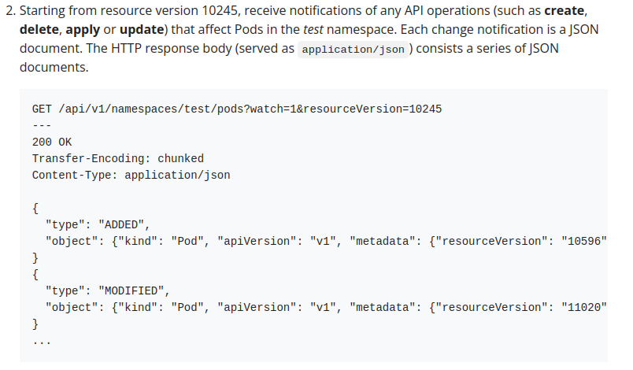

Understanding client-go listers and reflectors in the context of cluster-autoscaler
Contents
Problem
What are listers and reflectors in client-go?
I am going to talk about the above problem in the context of cluster-autoscaler.
Pre-requisites
This blogpost assumes you understand and have used:
- client-go (what should I do if I don’t? Check the official docs)
- Kubernetes (what should I do if I don’t? Check the official docs)
- cluster-autoscaler (what should I do if I don’t? Check the official docs)
Background
Let’s try to understand them in the context of cluster-autoscaler (CA for short). Think of CA as a loop that runs a function every 10 seconds. This function queries pods, nodes and many other resources (1,2,3) using Listers to reduce the load on the Kubernetes api-server.
What really is a Lister anyway?
Lister allows the you to list and get Kubernetes resources of a particular Kind (e.g., Pods)
Well, why can’t we just use client-go to list and get resources (say pods) like this or like this? What’s wrong with that? Let’s take a closer look at client-go for that:
|
|
Here’s the code for List:
|
|
Here’s the code for Do():
|
|
As you see, Do makes an http request to the api-server. This is important. Everytime you want to list pods, you have to make a request to the api-server. Every list response will have many pods in it which were there in the last list response too. This duplication is just putting extra load on the api-server. Is there a way to reduce that load when listing pods? Yes, listers is one of the ways to do it.
What’s so different about a lister?
Let’s look at a lister in CA codebase used to list pods to understand this:
|
|
List is defined here:
|
|
Notice the name ScheduledPodLister and how it is a wrapper around another internal lister called podLister.
podLister.List() is defined here:
|
|
source
Notice how List function above is not making an http request to the api-server. It’s requesting the data from a Cache.
s.indexer is of the type cache.Indexer. Think of cache.Indexer as Cache to store pods.
Note: I am going to use “Cache” with a capital C to denote the concept while cache or cache to denote the go package with the same name.
From all of this, it can be inferred that lister allows you to list pods without actually hitting the api-server, thereby reducing the load on the api-server
But, how is the Cache above filled in the first place?
This is where Reflector comes into the picture. Think of Reflector as a loop that runs forever in the background to populate our Cache. How does this help?
Well, let’s look at where ScheduledPodLister and podLister are initialized to understand this better:
|
|
I have skipped some lines in the code which seemed irrelevant. You can check the source link above to see the skipped lines).
Let’s dissect it line-by-line
|
|
Let’s look at the arguments:
kubeClient: Interface of type client.Interface which can be used to query in-built Kubernetes resources.stopChannel: This is used to stop the reflector from running. Sending a message on the channel would stop the reflector from running (we will get to where this happens in a bit).
Return type PodLister is an interface with only one function in it which looks like List() ([]*apiv1.Pod, error) (remember ScheduledPodLister implements this function with List() and calls podLister internally). The interface is defined here.
|
|
This is an interesting piece of code. We are asking NewListWatchFromClient (a function cache package provides us for convenience) to give us a cache.ListWatch struct if the correct RESTClient (in this case, the RESTClient is returned by kubeClient.CoreV1().RESTClient()), resource kind (in this case, pods), namespace (in this case, "" which denotes all pods) and selector (read label selector) is passed to it.
cache.ListWatch is a struct which contains a list and a watch function. This is what helps us fill our cache. We run the reflector which calls the list function to list pods at the beginning and then the watch function forever to watch for new updates from the API Server (note that watch function is a streaming connection i.e., the API Server sends updates to the watch function; I will get to what this means in a moment). e.g., (let’s assume we start our reflector at 10:00AM)
- 10:00AM: list func gets a lists of pods from the API Server. It finds pods A,B,C. It adds the pods to Cache | Cache: [A,B,C]
- 10:00AM: watch func starts | Cache: [A,B,C]
- 10:03AM: user creates a new pod D | Cache: [A,B,C]
- 10:03AM: API Server informs watch func about D | Cache: [A,B,C]
- 10:03AM: watch func updates the Cache with new pod D | Cache: [A,B,C,D]
- 10:12AM: user creates a new pod E | Cache: [A,B,C,D]
- 10:12AM: API Server informs watch func about E | Cache: [A,B,C,D]
- 10:12AM: watch func updates the Cache with new pod E | Cache: [A,B,C,D,E]
- 10:20AM: some problem happens with watch (we get an error)
- 10:20AM: start from 1 again
I have over-simplified things here. It is assumed that
- watch func receives updates from the API Server immediately
- Cache looks like an array of pods (which is not actually true; it’s more like a hash map)
The benefit of doing 1-10 instead of directly querying the API server using client-go:
- We don’t have to list pods every couple of seconds like we would do in polling
- We let API Server tell us about new pods
This saves load on the API Server. What happens if the process/controller doing list and watch dies? when a new process/controller comes up again, list func is called first which helps the Cache to catch up and the watch function runs again.
When you send a watch request, the API server responds with a stream of changes. These changes itemize the outcome of operations (such as create, delete, and update) that occurred after the resourceVersion you specified as a parameter to the watch request. The overall watch mechanism allows a client to fetch the current state and then subscribe to subsequent changes, without missing any events.
If a client watch is disconnected then that client can start a new watch from the last returned resourceVersion; the client could also perform a fresh get / list request and begin again. See Resource Version Semantics for more detail.
https://kubernetes.io/docs/reference/using-api/api-concepts/#efficient-detection-of-changes
Let’s take a closer look at cache.ListWatch. It looks like this in the code:
|
|
source
Let’s ignore DisableChunking for now.
If we look at what ListFunc and WatchFunc refer to:
|
|
ListFunc returns a runtime.Object which accepts an optional metav1.ListOptions (I say optional because you can pass metav1.ListOptions{} and the function will work). Note that runtime.Object here is an interface implemented by both Pod (ref1, ref2, ref3) and PodList(ref1, ref2, ref3) object. In this particular case runtime.Object refers to PodList object.
WatchFunc also accepts an optional metav1.ListOptions and returns a watch.Interface.
Let’s look at an actual implementation of ListFunc and WatchFunc to understand it better.
|
|
listFunc makes a normal HTTP call to get a list of pods:
|
|
watchFunc creates a streaming HTTP connection to receive updates from the API Server. Here’s a simplified version of code for Watch (check source below for the actual code):
|
|
Note how newHTTPRequest is called on line :723. Now, you might have the following questions:
- What is the
forloop for?
Notice ther.maxRetries. Theforloop runs continuously butretry.Afteradds a sleep in between and exponential backoff ifclient.Doon line:728errors. It does this untilmaxRetriesare breached. Ifclient.Dois successful, it means we are successful in creating a streaming connection. Returnr.newStreamWatcherwhich would be used to reading contents sent by the api-server. - Isn’t this an HTTP request? What’s so special about it? To answer this question, let’s look at the following code from above again:
|
|
Notice options.Watch = true on line :91 (we don’t see any such thing for listFunc). This is important. Why? Because this instructs the client to initiate a streaming watch connection.
 https://kubernetes.io/docs/reference/using-api/api-concepts/#efficient-detection-of-changes
Note that Watch = true is actually converted to ?watch=true in the query parameters. The screenshot above says watch=1 which is not correct. watch is defined as a boolean in the Kubernetes open-api spec here. Check the API reference for watch here
Going back to the code for definition a lister:
|
|
I hope line :211 makes more sense now.
Looking at line :212:
|
|
cache.NewNamespaceKeyedIndexerAndReflector is a convenience function from the cache package which given the listwatch struct, object and resync duration (you can ignore resync duration for now), it gives us a cache.Store (cache.Indexer embeds cache.Store) and a reflector.
Note: re-list and re-sync are two different things. re-list only happens once (unless there is an error or the reflector’s Run() function exits for some reason: ref1, ref2). re-sync makes a lot more sense in context of informers (I am ignoring this interesting construct for now because it is not relevant in this blogpost). You might find this google group thread interesting.
cache.Store is used to create our lister (which we use to query pods instead of directly hitting the API Server)
|
|
while the reflector is the thing which runs continuously to populate the Cache with new pod objects.
|
|
Since we have already looked at listers, let’s take a closer look at reflector.Run above.
|
|
BackoffUntil is called if ListAndWatch exits for some reason.
Let’s look at ListAndWatch (I have removed anything but the bare bones of the function to easily see what’s happening)
|
|
source
As you can see, list (list here is a wrapper function which internally calls r.listerWatcher.List()) is called at the beginning and watch takes over. Notice how stopCh can be used to stop the reflector because we keep watching for it from line :354 to line :358. watchHandler is what reads the content from watch that api-server sends and updates the cache.
The last line creates and returns a ScheduledPodLister.
|
|
To recap,
- Querying API Server directly using client-go in a loop puts load on the API Server
- To get around this we use listers. Listers use a Cache internally to query resources (like pods) instead of hitting the API Server directly
- The Cache is updated by
reflectorusinglistandwatchfunction.
Conclusion
I hope that gives you an understanding of listers, reflectors, list/watch functions and how they work together. I haven’t covered Informers or delved too deep into things like cache.Store, cache.Indexer. I think they are interesting topics in their own right and deserve a separate blogpost.
Feedback
I appreciate any sort (good and bad) of constructive feedback. Feel free to mail me at surajrbanakar@gmail.com.